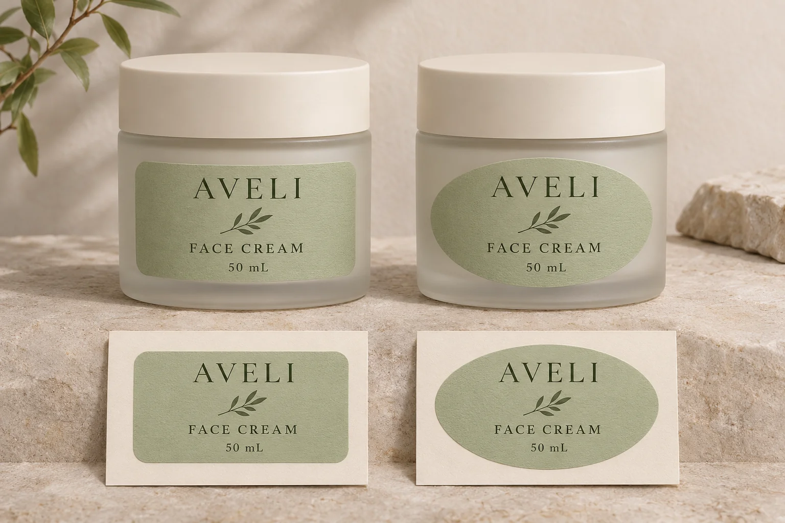
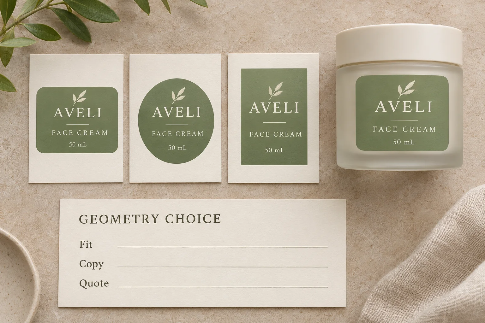

Choose a supplier-listed cosmetic label size when its actual drawing fits the container, carries the approved copy and supports the receiving operation. Keep the exact custom outline when a nearby option would compromise those requirements or an essential brand feature. Compare both complete proposals before changing the design to avoid a tooling charge.
The useful question is how much freedom the finished label really has. “Standard” can mean a size in one supplier’s catalog, an available cutting tool or a familiar sheet layout. It does not establish a universal size, ready stock or suitability for your bottle.

Start with the sourcing obstacle, then define the flexibility
In a public product-label discussion, a candle-business owner described difficulty finding a custom-size kraft label after a redesign. That is one person’s sourcing account, not evidence that online printers generally cannot supply custom sizes. The same purchasing question can arise for a cosmetic jar: must the supplier reproduce the exact outline, or could an identified alternative do the job?
Separate fixed requirements from preferences. Record the real container and usable panel, approved copy, essential design features and application method. Mark which dimensions may change and who can approve the change. “About the same size” gives the converter no usable boundary.
If the starting dimensions have not been checked, use the bottle label size guide first. This comparison begins with a proposed footprint and decides whether to accept an available alternative. It does not replace measuring the pack.
Request the actual alternative, not just a cheaper size
Ask for its finished width, height, units, shape and drawing reference. Confirm which direction each dimension describes. A rounded rectangle, an oval and a rectangle with different corners can share an overall width and height while offering different usable artwork space.
Put the exact proposal and each alternative on the same container at actual size. Review the accepted text and design on each outline. Check whether a corner or curved edge moves into important content, whether the intended front view changes, and whether the proposed position remains clear of the lid and curved areas. A percentage reduction applied to the entire artwork is a design change requiring review.
Keep the material, finish and supplied format visible beside the geometry. A listed shape on a different construction is not the same proposal. For machine application, obtain the operator’s response to the proposed arrangement. An office paper comparison can help select a footprint; it cannot approve adhesive behavior or dispensing.
Check the supplier’s actual pricing route
Consolidated Label’s die-cut description distinguishes shapes in its die library from a newly created die with a tooling charge. Its online quote interface also presents nearby existing-die alternatives. That is a useful example of why a buyer might compare geometry before commissioning a new tool.
However, a custom size does not universally mean an extra die fee. Avery’s own custom-size offer describes a different charging approach. Those provider-specific offers establish neither YT Labels pricing nor an entitlement to the same terms from another printer. Ask which production route and charges apply to your job.
Compare the acknowledged label price, new tooling or cutting work, artwork adaptation, proof or sample work and any confirmed schedule difference. Include a line once, rather than adding an assumed die fee to a price that already includes the work. Use the tooling and setup record to clarify the charge basis after the geometry options are identified.

Use a geometry-choice record
Give the exact proposal and each supplier-listed alternative a separate column. Complete the following rows before selecting one.
| Input | Record for each proposal | Decision or hold |
|---|---|---|
| Finished outline | Dimensions and units, shape, drawing reference and permitted changes. | Is this the required outline or an explicitly identified alternative? |
| Pack and copy | Actual container, actual-size comparison, copy/design review and accountable approver. | Does it preserve the accepted fit and content requirements? |
| Production and supply | Named construction, cut route, carrier format and operator review where needed. | Can the supplier and receiving operation support this particular proposal? |
| Complete quotation | Same quantities and finish; applicable tooling, adaptation, sample scope and timing conditions. | Is the whole proposed route acceptable, rather than only its cutting charge? |
- Mark the dimensions and design features that must stay fixed.
- Obtain the supplier’s exact alternative drawing and current quotation.
- Review that geometry with the actual pack, approved copy and relevant operator.
- Select the accepted route and attach its drawing revision to the order.
For a hypothetical cream jar, a slightly shorter listed rectangle may be acceptable when the full-size review preserves the required layout and the brand authorizes the change. For another jar, the curved alternative may crowd a required text block. Keeping the custom rectangle can then be justified without calling custom shapes inherently better.
Hold the decision when the nearest available drawing has not been supplied, the alternative requires an unapproved copy change, or the quotation silently changes construction. If the selected outline still needs a converting review, use the complete layout and waste-matrix guide before releasing tooling. That later technical review answers a different question from choosing the finished geometry.
Send the exact outline and the permitted flexibility
For cosmetic bottle and jar labels, provide the actual pack, proposed dimensions, artwork, construction preference and quantity per design. Mark which features must remain and ask whether a supported listed alternative or an exact custom route can be quoted.
The form prepares a message. Send drawings and actual-size comparison photographs by email or WhatsApp.
Prepare a geometry comparison inquiry